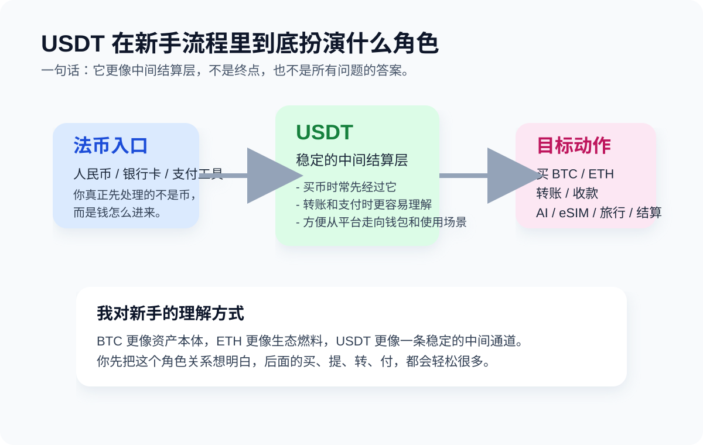

USDT 是什么？

USDT 本质上是稳定币。我自己更喜欢先把它讲成一句人话：价格目标接近美元的链上记账单位。它不是拿来像 BTC 那样拼波动的，而是拿来把买币、转账、支付和链上操作这些事先跑顺。
TL;DR
很多新手第一步接触加密资产，不是直接买 BTC，而是先拿到 USDT。原因很现实：在大量交易、支付和链上场景里，USDT 更像“基础结算层”。你可以不喜欢这个名字，但你大概率绕不开它。
很多新手第一步接触加密资产，不是直接买 BTC，而是先拿到 USDT。原因很现实：在大量交易、支付和链上场景里，USDT 更像“基础结算层”。你可以不喜欢这个名字，但你大概率绕不开它。
我为什么总把 USDT 说成“中间层”
因为我自己看新手路径时，USDT 最像的是一条通道，而不是终点。你真正遇到的通常是这几类问题：想买 BTC / ETH，但第一步先经过 USDT；想把钱从平台提到钱包；想做一笔链上转账；想给 AI、eSIM、VPN、海外服务付款。
在这些动作里，USDT 不是“最酷的资产”，但往往是最先被用到的工具。
USDT 和 BTC / ETH 到底差在哪
| 资产 | 我自己的理解 | 新手最常在哪一步碰到 |
|---|---|---|
| BTC | 更像资产本体 | 真正开始配置或长期持有时 |
| ETH | 更像生态燃料 | 进以太坊生态、交互合约时 |
| USDT | 更像中间结算层 | 买入、转账、支付、链上过渡时 |
为什么很多人第一步先碰到 USDT
不是因为 USDT 比 BTC 更“高级”，而是因为它在实际工作流里更常被拿来当中间层。很多人嘴上说想买 BTC，真正开始操作时，第一步碰到的却是 USDT。
- 因为很多币种都直接和 USDT 交易。
- 因为转账、收款、支付时，稳定币更容易理解。
- 因为比起直接承受大波动，新手更容易先用一个相对稳定的单位熟悉流程。
新手最容易误会的地方
- 以为 USDT 只有一种，不分网络。
- 以为买到 USDT 就等于会用。
- 以为稳定币就没有操作风险。实际风险常常在链、地址、平台和支付路径上。
我会怎么给新手下一个最短结论
USDT 更像一层稳定的过渡通道，不是所有问题的答案。
你如果把它看成“工具”，很多事会更清楚；你如果把它误会成“买完就结束”，后面往往更容易翻车。
风险提醒
稳定币的“稳定”主要说的是价格目标，不代表操作绝对安全。网络选错、地址填错、平台规则没看懂，照样会出问题。
稳定币的“稳定”主要说的是价格目标，不代表操作绝对安全。网络选错、地址填错、平台规则没看懂，照样会出问题。